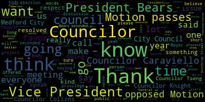
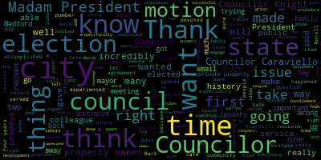
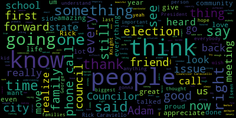
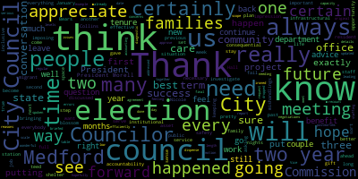

AI-generated transcript of City Council 12-19-23
English | español | português | 中国人 | kreyol ayisyen | tiếng việt | ខ្មែរ | русский | عربي | 한국인
Back to all transcripts
[Morell]: 25th regular meeting, December 19th, 2023, is called to order. Madam Clerk, please call the roll. Madam Clerk, please call the roll.
[SPEAKER_07]: Vice President Bears.
[Bears]: Present.
[SPEAKER_07]: Councilor Caraviello. Present. Councilor Collins. Present. Councilor Knight. Present. Councilor Scarpelli. Present. Councilor Tseng.
[Morell]: Present. Present. 7 present, 0 absent. Please rise to salute the flag. Announcements, accolades, remembrances, reports, and records. Records of the meeting of December 12th, 2023 were passed to Councilor Collins. Councilor Collins, how did you find them? I find them in order and I move for approval. Second. On the motion of Councilor Collins, seconded by Councilor Caraviello. All those in favor? Aye. All those opposed? Motion passes.
[Bears]: Motion to suspend the rules to take papers 23-412. 23-412. 4-7-4, 2-3-4-7-5, 2-3-4-7-6. And that's it. And the motion of Vice President Bears is to take 2-3-4-1-2, 2-3-4-7-4, 2-3-4-7-5, and 2-3-4-7-6 out of order, seconded by Councilor Scarpelli.
[Morell]: All those in favor? All those opposed? Motion passes. 2-3-4-1-2. Adam Dash and Associates Attorneys at Law. This paper has been before us a number of times, so unless Councilors need a reminder, I'm happy to hand it over to Attorney Dash, yep, you're good, to provide us with an update on where we stand.
[Dash]: attorney Adam Dash, 48 Grove Street in Somerville with me are Jerry and Janet Alves back there. We have been working on a draft agreement with staff. I would note that the, I believe that the substance is pretty much all set and I'm gonna tell you what it is. I don't, from talking to staff just before tonight, I was told that it is not in final form. So a little disappointing, but that is where we are. If staff are on on the call, they can probably weigh in on it. I did want to note that I do want to at least explain it to you 1 last time, because I know a lot of you put a lot of time into this and been very gracious to have us here and won't be here going forward. So just give you 1 last opportunity on this that. The amendment was to allow the offices to seek to build three units on the property that would be subdivided into two lots. Currently, the city has a deed restriction preventing any new units or any subdivisions. Again, this amendment would not allow any further subdivision. It would not allow any further units. It would just be one subdivision, three units, and the restriction would continue on in all of their forms. The amendment does not mean that the office is gonna actually build anything. It just allows them to go through the normal permitting process like everybody else. There'll be public hearings and all of that. And maybe they get the permits, maybe they don't, but they can't even do that unless the amendment and the restriction is amended. In exchange for the restriction, the Alvarez's would pay an amount to the city in lieu of providing the affordable unit on site so the city could build affordable housing elsewhere so the Alvarez's disabled son and the sister-in-law themselves could live in the new units as they may not legally qualify or win the lottery to get the units. So the amount in payment in lieu, we did work talk to the city and it is in this agreement draft would be the difference between the fair market value of a three bedroom unit and the value of that unit as an 80% affordable, and that delta would be the payment, so that there's no profit from the unit going to the offices, and then that money would go to the city for building affordable housing elsewhere. That is not in contention. So I suppose one thing one could do is, and I'm not pushing for anything, but if one wanted to, I suppose, the council could vote to approve this pending this working out a deal working out the finality of the agreement with the staff or could kick it to January. I sort of leave it to you. I would just like to, obviously, since you've all been involved in this, to explain it to a whole bunch of new people is not really what I would like to do, but we will, obviously, if that's your pleasure. And I guess this just came up before pretty much I went to dinner and came over here. So I don't really have a whole lot more to say other than that, but that's where we are with it. I think the substance is pretty much done. The main detail I think outstanding is the timing of the payment. is that the certificate of issuance of certificate of occupancy, they won't have any money because they won't have sold a unit to get the money to pay the city. So certificate of occupancy doesn't really do it. On the other hand, I understand the city's position, which is, if we if you wait till they sell the unit, what if they never sold a unit forever in the city would never get the money. I get everyone gets each other's point here. And there's got to be a solution here. I can't today, this afternoon, tell you what that is. But that is if anyone has a bright idea, I'm happy to hear. But that is the situation that we're in. And as far as I understand, that is, in my mind, the only thing that's left unless staff has another issue that I'm not picking up on.
[Morell]: Thank you, Attorney Dash. We do have Director Hunt on the call. I just want to offer that perspective or any comments.
[Hunt]: Thank you, madam president. So, basically, we do think that there is a place here. We can come to an agreement where there would be a payment to the city. to the Affordable Housing Trust in lieu of actually creating an affordable unit. We think that the logistics, everything of that would be easier. We have not yet worked out exactly how much that payment would be, what the terms, at what point in the process that would be. In my mind, that is really important to approving this is that we have to have this fully worked out here. He is correct that this doesn't permit anything to actually get built, but we can't condition any of the permitting pieces on this kind of a payment in lieu of an affordable housing unit. It would be pretty significant, whereas we can condition the lifting of the waiver or lifting of the requirement for the restriction, sorry, That is actually a very reasonable thing to condition the lifting of the restriction on a payment like this. I will mention that senior planner Danielle Evans is waiting to get let in the Zoom room. She's actually the one who's been working on this the most. and has previous experience with things like this from other communities. I honestly don't see that there's very much to inform other Councilors on the new Councilors. I think a lot of them are very familiar with this already. And I would be more comfortable having the council vote once we have a fully negotiated agreement. I will point out that the agreement we're looking at has to have the mayor's signature. And we have not yet had a chance to bring the mayor up to speed on this as well. She was waiting to see what details we could work out before she sort of dug into it. So she hasn't seen. I did send her the document. I should say I haven't heard back from her. So I assume she hasn't yet had a chance to see it since I sent it to her. So my preference would be for the council to table this and to vote with the new council. I think you'll have the same turnout, but we would actually have a fully written out documented agreement. We also have attorney Sharon Everett on the line who has been our attorney on this. I don't know if she has anything additional to add. So I certainly asked her about the portion that this is a public hearing and the members of the council will be turning over. But we do not need a public hearing in order to approve the changing of the restriction. It's just a simple majority vote of the city council. So thanks.
[Morell]: Thank you. Vice Mayor and Councilor Knight.
[Knight]: I'd just like to ask Attorney Dash, how are you? Good to see you again. How long have the process has been for the applicants from start to recount? How long ago did they initiate this process?
[Dash]: Four years or something like that. Can you say that again?
[Knight]: Four years?
[Dash]: About four years we've been working on this. We tried to do a lot of research with the city to figure out why the restriction existed in the first place. And we put in some public records requests and I got a bunch of documents. There is no answer to that question. Nobody I've talked to, retired people in the city who were there at the time, people I've been referred to from people I've been referred to from people I've been referred to in various departments, all the documents that I've gotten, speaking with the law department when there was a city solicitor, nobody had an answer as to why this restriction existed. Because before I came to you, I wanted to know why it was there. So that would certainly inform how we proceeded. And then that took us a very long time. And then we did circle through with the mayor's staff and made sure that if the mayor conceptually was on board with this, because if the mayor was not conceptually on board with this idea, we weren't going to bother you with it. So we got sort of that green light to go forward with the understanding she, of course, hasn't seen the final document. So, yeah, this all took a lot of time.
[Knight]: Have there been any significant delays coming relative to the legal aspect of this? Because we don't have legal counsel or city solicitors. Well, we were... You've got to wait three days to get somebody to call you back, four days, five days a week. I mean, ultimately what I'm hearing is that they started the process four years ago, and at some point it's going to present some sort of economic hardship. And, you know, we can only hold people over a barrel for so long as they try to shake them down in a negotiation going on in another department over here. But if this is just an issue, whether or not the council feels they should change the deed of restriction, I don't see why we should be the ones to hold them.
[Dash]: Well, we're almost there, to at least this point, in that we're And that, since Attorney Everett's been on here, we've been making progress, as you can see.
[Knight]: In full disclosure, I live on Movement Street. You know what I mean? I live at number 200. I'm probably three football fields, four football fields away. I'm not a direct butterer. I'm not a butterer. I'm not a butterer. But, you know, just in the interest of disclosure, I'd like to say that.
[SPEAKER_07]: Is that a motion?
[Knight]: It's not a motion, it's more of a question. I mean, at this point, Councilor, this is my last meeting, I'm a lame duck Councilor. I'm not going to bring any racial items forward at this point. But, you know, I just kind of find it curious that, you know, it's taken these hardworking individuals in this community four years to get this process really rolling.
[Dash]: I would say COVID delayed us a little bit too. May I give you that line, too?
[Bears]: I would motion to, well, I don't want to. I'll let you speak, but after you speak, I'm going to motion to table to a date, sir.
[Scarpelli]: Thank you. Councilor Dasch, I know that one of the questions that was brought forth was the turnaround for the fire truck. That was a big issue, but that was resolved. Yes. So again, I think the biggest issue is really moving this forward. Something that I believe what the family had mentioned at the beginning, that it was a hardship due to a family member. And that's the reason. And I think that I know my fellow counsel is going to table it, so he allowed me to speak. I would move it on the vote, but obviously I don't think it will have the vote, so I just think that we have a new council coming in. I think that if we can bring them up to speed and hope for the first meeting in January we get this passed, because this is, I still don't, I don't see why it's an issue that we can't move this forward. Because it seems like in good faith, we're, we're, we're going above and beyond. You know, I look at this in a sense that we're kind of holding the Alps hostage here, in a sense that we're, you know, what we're asking them to do, we're going above and beyond right now. And it seems like the city has really, really just waste a lot of people's time not getting the answers to the right people. To hear the fact the mayor hasn't even seen this yet is a little bothersome to me. That to me is just, you know, no disrespect in any way, but attorneys are expensive, correct? And everybody has to make a living. But we're talking about amount of time that's being spent by the Alice family to try to get this push forward for a good reason. And in even having the open dialogue and doing something that I know I wouldn't do, I wouldn't, you know, allow myself to sort of be bullied to try to make this happen. This should be something our community should be looking to assist each other. And so, um, know, I just I'm a little confused why we can't move this forward in the sense of a time sensitive situation. So, but I'll leave it at that. Thank you.
[Collins]: Thank you, Councilor Collins. Thank you, President Morell. Thank you for being before us again. We always appreciate you keeping us updated meeting after meeting. I would second the motion to table this to a date certain, and I certainly appreciate it. I know you've put time into keeping us briefed on where negotiations and putting together the agreement is at. I think you've done a wonderful job of putting the project into scope pretty efficiently for us in the past, and it's my hope that if we meet on this at our first or second regular meeting in January with those final details ironed out, hopefully we can approve this and dispense with it and get you and the offices on to the next step.
[Dash]: That would be great. I would note and also for the record that I think staff and everybody in the city has been working in good faith on this. As you can see, it's just. It's an unusual request, and there's not a whole lot of there's no playbook for this, so it's been a little difficult to figure out how to proceed, but we're almost there.
[Bears]: Thank you. I would make the motion to table to January 9th our date certain. Okay.
[Tseng]: Thank you. Thank you, President Morell. I wanted to thank you, Attorney Dashin, to the Alves family for being so patient and negotiating in good faith with this. If I were the family, I'd feel super frustrated with how long this has taken. I don't want to accidentally undercut the Planning Department's positions on any of this. I know this is new territory for you all to chart, so I would like to know if January 9th is a realistic date, because I would want to vote this out by then.
[Morell]: Do you think January 9th is a realistic date?
[Dash]: It is for me, because I can hop on as quick as I can. I suppose that's more a question for Director Hunt and her staff.
[Morell]: We do have Planner Evans on the call as well. Danielle, is there anything you'd like to add?
[Evans]: Yeah, so we are working on a cash payment calculation. and the timing of when it would need to be made, and we're still trying to iron out those details. I think we are very close, but we want it to be a nice, clean boat. Basically, there was an RFP to develop this when the city was selling the property, and even that cannot be found. So it might be somewhere, but I know Attorney Dash has been unable to find it. So I'm trying to have as few pieces of paper and votes floating around. It could be one clean vote, then it'd be easier to track. So that is our preference.
[Dash]: Thank you. I suppose if staff feels that we can wrap it up by January 9th week on our end, we certainly can.
[Morell]: So we have a motion to table to January 9th for vices affair, seconded by Councilor Tseng. All those in favor? All those opposed? Motion passes, table to January 9th.
[Dash]: Thank you.
[Morell]: Thank you again.
[Dash]: And thank you for your service for those of you who are not continuing. You've done a good job. I know it's difficult.
[Morell]: Yeah, and you know how difficult it can be. Have a good night. Thank you. 23-474, correct? 23-474.
offered by vices and bears, whereas the election commission voted 3-1 to postpone discussion of the council's request for a report on the 2023 election issues to the commission's January 2024 meeting. Now, therefore, be it resolved by the Medford City Council that a report be placed on the reports due slash deadline section of the council agenda titled 2023 Municipal Election Process Errors and Accountability Report with the deadline of the January 23rd, 2024 regular meeting for a presentation by elections manager Ripley and election commissioner chairperson Miller. be it further resolved that the council adds the following requests to that report. One, any issues with the process for filing for a recount and why it took so long for the candidates and the public to be notified. Two, any process issues in preparation for the recount. And three, what systems will be put in place to ensure prompt and timely notification of any issues or errors to the public to ensure trust is maintained when errors are made. Vice Mayor.
[Bears]: Thank you, Madam President. This is an amendment or addendum to the previous resolution. from November 14th that we joined with Councilor Scarpelli as well. There was one from Councilor Caraviello, President Morell and I, one from Councilor Scarpelli. Those were referred to the Elections Commission and the Elections Commission voted 3 to 1 to postpone their discussion of the item until their January meeting. So I'm not particularly happy that that decision was made. I don't think I don't think this should be something that waits. Many of us here spent some time at City Hall on December 9th for the first and what happened to be the only day of the recount. While the results of the recount did not change in any way the results of the election, I think what was found to be inaccurate was significant and concerning in the sense that if the election had been close or if any of the races had been close, Those numbers could have changed the results of an election. almost 130 ballots in one precinct that somehow didn't get counted in the unofficial count, right? So in addition to everything that was in the resolution that we passed November 14th, which had to do with all of the things that happened that we knew at the time had happened up until election day and on election night, the recount also did expose a couple of other items for consideration. And that's incredibly important to the community that We have answers to those questions and answers to the process and fixes to the process and staffing and resources in that department. So that we have confidence that, number one, mistakes that were made in the past aren't going to be made again. And number two, when mistakes happen, which in any human endeavor is inevitable that there will be things that go wrong. the public is made aware and the candidates are made aware right away. I think that's really the most important thing. I know in the past when issues did occur, you know, and I haven't been involved as long as some other folks here, but Sandy Gale, Clark Hurtubise, others really did try to get the word out right away. We had this issue. We want you to know what the issue was. We want you to know how we tried to address it, or who we brought in to help address it. I know that Finn had done similar things as well. And that has to be how our elections offices operate, right? If there is an issue, you get the word out right away. The operating procedure can't be that if there's an issue, you try to fix it without anyone noticing, because that just does not bring trust. So putting this on, formally putting on an item for this report to be on our agenda with the deadline of January 23rd, which is our first regular meeting after the next election commission meeting. But I am disappointed that the election commission, I believe their rationale was that they had to plan for the recount. I understand that. I wish they had had, uh, that they had considered an issue to response to this report in a more timely manner because there's an election in March. The presidential primaries in March. Thank you.
[Morell]: Thank you. Councilor Collins.
[Collins]: Thank you, President Morell, and I appreciate you bringing this forward. Vice President Bears, we've spoken at length already in previous council meetings about the original reasons for bringing forward the request for an election postmortem and report, the errors and mishandlings that happened on election day, which again, were addressed, which should not have happened, and we need to know exactly how they won't happen again. And then the issues and mishandlings that happened leading up to the recount and needing a full accounting of why those happened and how exactly we'll know they won't happen again. To me, this is on the institutional scale, an example of people don't plan to fail, they fail to plan. We've discussed how going into this election, There were serious concerns about the capacity of the elections department because its staffing had dropped so low below its previous levels. And I think we really need to see, we need to see the diagnostic of what exactly happened and why. And we need to investigate. First, the Elections Commission, the Elections Department, and then as a community, as a council, we need to investigate what needs to happen so that we can go into our three very consequential elections in 2024 with the Elections Office and the Elections Commission feeling professional and organized and competent so that every voter and every resident in Medford can feel confident. about the three, again, very consequential elections that we will have in 2024. And I do think it bears emphasizing that by the time that we hear back from the Elections Commission at our January meeting, it will be less than two months until the first of those three elections. So I think everybody shares a sense of disappointment that it's necessary to have this conversation at all, that it's necessary to put a deadline on it because we haven't gotten a really any response so far. But if it takes imposing accountability at the outset until this commission and the department can be imposing accountability from within, it's non-negotiable. Thank you.
[Morell]: Thank you. Any further discussion from councilors?
[Caraviello]: Madam President?
[Morell]: Councilor Cabral.
[Caraviello]: Thank you, Madam President. Board of Integrity is probably our utmost right in our country. That's what our country was founded on, is people's rights to vote. People have died for the right to vote. So I don't understand why it's going to take a whole nother month to figure out what went wrong when everybody in this room knows what went wrong. I'm a little disappointed in that, and that'll be up for the new group to do. But when people keep getting calls saying, I'm never voting in the city of Medford again, it's a shame, because that's not how it's supposed to be, never how it ever should be. We made mistakes. Let's, everybody knows what the mistakes are. We don't need another month to wait and figure out what we did wrong. It should be, it should be being addressed now. The coverup is always worse than the crime, Madam President.
[Morell]: Thank you. Councilor Knight.
[Knight]: Madam President, thank you very much. Councilor Caraviello is absolutely right. The coverup is always worse than the crime. And Councilor Bearsley is right. Trust in the public process is paramount, especially when it comes to elections. So why is it that we have an elections commission that's going to go hide under their bed? when the largest issue in this community has come up in a very long time. I don't understand how an election commission can vote 3 to 1 to postpone reporting back to this community the flaws and errors that occurred during their mismanagement and incompetency following that election. I sat up here the evening of the election, and I heard them read off the figures. I heard them read off the total vote count. And I said to myself, you're missing like 4,000 votes. You're wrong. You don't know what you're talking about, Councilor. You don't know what you're talking about. I know one plus one equals two. I know one plus one equals two. The way that election was handled was the most embarrassing sight I've seen in a long time. I worked on political campaigns since I was seven years old. I've never seen anything handled like that before in my life. The elections manager was not in this room the whole entire night. I was here from 8.05 until almost one o'clock in the morning And the elections manager was nowhere to be seen. All the vote totals in bags, unattended, all over this room. Individual members of the election commission, unsupervised, alone, going through the bags, looking through them, rifling through them. And you wonder why stuff is going missing. You wonder why we can't put it together, Madam President. That was the biggest embarrassment I've ever seen in my life. Now, shockingly, we do have a CEO in this community. who's been extremely quiet, extremely quiet about what happened during this election. Which leads me to believe that this behavior is something that's acceptable with this current administration. Because I know if it were me, and the integrity of my election would be brought into question, I'd be sure that the department heads and the board members by way of which I appointed personally, because I'm the mayor, would have their heads rolling down the street. The way that they treated election day volunteers, people that wanted to participate in the process and be involved, was shameful. And for them to now vote, to postpone the discussion, just tells you what kind of culture we have here at City Hall, Madam President. Thank you very much.
[SPEAKER_07]: I think the council to bring this people.
[Scarpelli]: Thank you. If Council Vice President would entertain, could we add something to the motion? I'd like to get the attendance record for all of the members on the Election Commission. I think that's important. Because I think that's important. Um, from what I gather, we don't have too many members that are actually committed to that commission. And I don't think we're taking it as serious as we should. My biggest piece with this situation is accountability. We've seen very, very good people be marched out that door. But not even a quarter of the concerns that we've we've or understand any process that has gone on is a disgrace. I haven't heard from one commissioner. I haven't heard from anybody except for the coordinator who sent us a message saying that the election is now certified. And like Councilor Caraviello said, my biggest problem is when I was a young man, when I was in high school, everybody had a mandatory class called civics. And you learned about our government. You learned about the respect you should give this process. I still remember my son just left a minute ago. We talked about how Mrs. Lasky ran the fourth grade presidential election in her classroom and how important everything was and how organized everything should be. I wish Mrs. Lasky ran this last election because Councilor Caraviello again is right. When people don't want to vote, good people, good hardworking people that took pride in coming to that ballot box every municipal election. They've looked me in the eye and said, they'll never vote again. They have no faith. And I truly thought that maybe coming out ahead of this could have helped that. But instead, we just fed into the rhetoric. And I said it the day that we had the first issue. I said, what? I said, be careful. because perception is reality and it's exactly what happened. So moving forward, I know that we'll have a new council, but I think as this council looks to move people forward and look at our budgetary processes, we have to start looking for people. If the city administration is not going to hold people accountable, then we're going to have to make sure that they that they know that this council is going to be strong enough to make sure they hold their people to the feet of the fire. Because this has been an absolute laughingstock across the commonwealth. And the fact, I'll be honest with you, I'm disgusted with the Secretary of State's office. Reached out to them, haven't heard anything. This is what they're all about. If this is what the Secretary of State and our governor sees that that's appropriate, look what's happening. It's a trickle-down effect. Now, who knows how many people aren't going to come out for the next elections. And why? No one's told us anything. No one's even talked to me. I got a bunch of fluffy, I'm getting a lot of emails, fluffy emails, you know, wishing me luck, a happy birthday, a congratulations, but no one is still from that commission's talked to me about, George, this is what's going on. And they're good people. And then for the recount, I know I wasn't there, but I, I talked to a few people that came here, gave their time to help with the process. And I heard our coordinator, our elections coordinator was verbally getting in people's faces and disrespecting people to the point where the attorney from the from the candidate side had to step in and say, Please do not address any of our people. Talk to me. That's a disgrace. So there's a lot more that's going to go on in that meeting when they come back. But my biggest thing right now is, and a lot of people that have talked to him on every side, every side, this isn't just, you know, the George Scarpelli side, this is every side. Everybody's watching to see where the accountability pieces. That's what everybody's waiting to see. And if you want to give them benefit of the doubt until the January 29. So be it. But if you're gonna come up to that podium on January 29th and give us fluff, be prepared, because this one Councilor is gonna ask some serious questions, and I'm gonna be calling people out directly. So thank you, Madam President, and I rest my case.
[Morell]: Thank you. Councilor Caraviello.
[Caraviello]: Madam President, thank you. If Councilor Bears wouldn't mind amending this to put one more thing on that, to why it took almost five hours to shut off the central tabulator. When all machines are supposed to be shut off at eight o'clock, why did it take till almost one o'clock in the morning for them to shut down the central tabulator? And make that phone, if you wouldn't mind adding that onto that.
[Morell]: Thank you. Any further discussion from Councilors?
[Bears]: What was that? Did you say give them a raise, Councilor? I missed that. What was that? Motion to approve as amended. Madam President.
[Morell]: Second. The motion by Vice-President Bears, seconded by Councilor Scarpelli, as amended by Councilor Scarpelli, and amended by Councilor Caraviello. All those in favour? Aye. Opposed? Motion passes. The next resolution is for me, unless Councilors object. I think it's for you, Chair. 23-475, offered by President Morell, be it so resolved that the council explore and consider language for an ordinance regulating blasting and earth removal within the city.
This is something... I didn't call for participation, but no, I didn't know, but you always can't. I mean, if you want to wait for participation or Councilors, I know we, yeah, we'll get, yeah, we'll, we'll go back to it. I apologize. 23-475, offered by President Morell, be it so resolved that the council explore and consider language for an ordinance regulating blasting and earth removal within the city.
This is something I already introduced, but apparently I didn't. This was originally kicked off, of course, by the giant hole that exists, continues to exist, that's still not houses, on Winthrop Street, that we had myriad complaints about, lots of issues, and then I think was kicked off again as the we're looking at that deed restriction understanding there's a lot of ledge in that area my intention in this is not to this is obviously for the future my intention is not to say hey there's no blasting but just understanding that a lot of the issues relating from the Winthrop Street project is that we have nothing on the books as far as regulations and permits and steps that people have to follow when they're actually doing that so making sure we have some steps that make sure that our the residents and neighbors in the area aren't disturbed in the way that they were with the Winthrop Street project and it's done in a completely different way that respects our residents and make sure that we have permits approvals and process in place to make this a much better experience should it go forward in any place in the city than what happened on Winthrop Street. So, go ahead Councilor Tseng.
[Tseng]: Thank you President Morell for introducing this. As you might know, I'm very excited about this. I am very much looking forward to helping lead on this in the new council. What we saw with Winthrop Street is not acceptable to the residents of the city, and we need more safeguards for future action. We know that the housing market is hot, and it's becoming more profitable to blast off ledge and build more housing. We just need more community engagement, more community conversations about what that process looks like, informing residents of what to expect, having regulations of best practices, basically taking lessons that we've learned from the Winthrop Street Project to future projects. And so I'm very grateful that you introduced this.
[Morell]: Thank you. Councilor Caraviello.
[Caraviello]: Thank you, Madam President. Something I brought up about six months ago was this, the Wimper Street project. But, you know, blasting is never a good thing, you know. But, you know, most people blast a day here or there, and that's about it. This company's been blasting nine years. Nine years. Okay? It is a commercial business. They are selling the rock. Okay? They should be taxed as a commercial business. They're paying on an open space of land. I thank you for putting this forward and I hope that this never happens again, what happened at Winthrop Street, because you live there, other people we know live there, and that's not even close to even stopping. Because they keep, the rock just keeps coming out of there. You'll be lucky if you still be living. Your son will be 10. He'll be living in one of those houses by the time the rocket's done.
[Morell]: Thank you, Councilor Caraviello.
[Bears]: Madam President, motion to refer to the Zoning Planning and Development Subcommittee.
[Morell]: Any further discussion from the Councilors? Any members of the public wish to speak on this? On the motion of Vice President Bears to revert to the Zoning Subcommittee, seconded by Councilor Tseng. All those in favor?
[SPEAKER_06]: Aye.
[Morell]: All those opposed? Motion passes. Going to 23476. To Honorable President and members of the Medford City Council, regarding Community Preservation Committee appropriation requests, on behalf of the Community Preservation Committee, I respectfully request and recommend that Your Honorable Body approve the following recommendations of the Community Preservation Committee, requesting the appropriation of $115,000 from the CPA General Reserve to the Royal House Enslaved Quarters for the Royal House Roof and Gutter Restoration Project, requesting the appropriation of $145,000 from the CPA General Fund to Shiloh Baptist Church, for the Shiloh Baptist Church construction project. The project will be tracked in the Community Preservation Fund. The CPC recommendation letters are attached and incorporated. Thank you for your consideration. Respectfully submitted, Brown, Lungo-Koehn, Mayor. Any discussion, questions from the Council? I know we have Teresa here. Seeing none, motion of Councilor Knight to approve, seconded by Councilor Scarpelli. Madam Clerk, apologies, please call the roll.
[SPEAKER_07]: Yes. Yes. Yes. Yes. Yes. Yes.
[Morell]: Yes. The affirmative. Is there any negative? The motion passes.
[Bears]: Madam President, while we're on suspension, motion to take public participation.
[Morell]: second by Councilor Tseng all those in favor. All those opposed. Motion passes. Public participation. Melanie, if you'd like to. In general, but I mean, yeah. In general, but.
[Tringali]: Hi, Melanie Tringali, 116 Forest Street. I'm actually one of the candidates that requested the recount of the recent election, and I just want to recognize and appreciate Councilor Bears for adding those additions to the agenda this evening. I think it's really important that we have integrity in our elections and that they're accurate. In addition, I would like it noted that you know, after the election, there was a lot of discussion about the process. And though each one of these city council members agreed that there was an issue with the process, you all agreed that there was no change in the accuracy of the election. Well, the election was not accurate. The, The outcomes may have not changed, but the accuracy was not accurate. We missed over 130 ballots that were not counted, which Councilor Bears had mentioned. But in addition, and I think this is something that should be addressed, is that there was tabulations. There were several precincts that had tabulations where there were more ballots counted than actually tallied than there were counted. In two precincts, there was 40 ballots more that were tallied than what was actually counted during the blocking process, and there was another precinct that had 50. In addition, there were others that had smaller amounts of 11 and 15. But that, to me, is a serious issue with the tabulation machines. So my hope is that somehow those will be addressed as well. Thank you. Thank you.
[Morell]: We have one more person. Name and address the record, please.
[Merritt]: Nate Merritt, 373 Riverside at Medford. Councilor Knight, it's gonna be, I'm sorry to see you go. So it's been a pleasure. Sorry, I had to pull myself away from-
[Morell]: We do have the nice words about Councilors section coming up for the agenda too.
[Merritt]: Oh, I'm sorry, I thought you did that already.
[Morell]: No, if you're up to say nice words about Councilors, we're gonna do that next.
[Merritt]: Absolutely. Or words, or words. No, but other things too, I'm sorry. No, I was just gonna give him some, cause he was gonna end this before I could talk. Transparency seems to be like a common theme here among my years in the city. I've been here since 2014. This council was actually very much a proponent of trying to bring transparency back to a process with the 61 Locust Street project, to which I commend the council at the time, and some of you were still a part of that, which is great. So then I find out that through the grapevine that there's a potential for having 50 to 75 migrant families directly across the street from my house, sorry, diagonally across the street from my house on Riverside F in a commercial project. Haven't heard anything about it. So the good councilor Scarpelli's point about no transparency or lack of transparency from folks in the administration. We have the CEO who was part of the council at that time of the 61 Locust Street project, who was very much a proponent of transparency from the city. So I got to ask like, what is going on? And can someone please make public the rumors that have been talked about? Because as a resident in an adjacent building, and a neighborhood, and I know that my neighbors know nothing about this, it's kind of a big deal, especially because these sorts of things are also on the news, especially in New York City, where they can't handle what's happening to their properties. So this, I guess, is a commercial property that now we're going to all of a sudden start housing people in. And I just want to know what's going on because I live there. I know some of you don't, and it's not in your neighborhoods, but it is in mine. And I have two small kids at home, and so I'm concerned about things like safety. That's my number one thing that I'm concerned about. I don't have a good feel either way. It's not that I'm opposed to it, but with no information, it seems like it's kind of underhanded. And it's kind of a theme that I'm seeing in this city's government to the point of two topics ago between elections and zoning, so on and so forth. So I'd really appreciate some answers if someone can give it. And let's make this for the public record instead of just rumors.
[Bears]: Thank you.
[SPEAKER_07]: Thank you.
[Bears]: Thank you. Yeah, we received an email, Nate, that the state government is in the governor's executive office. The state government is in negotiations with a private property owner at that location for housing of migrant families. That's all we know. And then I believe that the mayor's email also said that they are trying to negotiate to have the city in some way involved in that process. But right now, the state and the private property. I can read it. Yeah. I can share this with you. Sure, that'd be great.
[Scarpelli]: It says, temporary shelter. Hello, representatives, senators, members of Medford City Council, Medford School Committee. I wanted to give you all a heads up on an ever-evolving matter. At the end of last week, I was informed that 400 Riverside Ave was being explored. as a possible temporary winter emergency shelter for migrant families on the wait list. The state was only going to pick one site from my recollection on a phone call. The families would only each stay a few nights before they would be transitioned. The shelter was going to run through April and start with those families currently staying at 10 Park Plaza and may build up to no more than 75 families. The state, excuse me, 75, the state asked for a walkthrough today, and at the time, the Commissioner Rice relayed different terms to us, all regarding capacity and length of stay through June. He also said that this was the site they plan to try to move forward with. I have another call with the state tomorrow to try to get more clarity. This is 110,000 square foot site that meets the needs of the state. And I'm worried about the burden it will cause with city staff, the school department, and et cetera. It reaches the capacity that we are unable to handle. I will follow up with you when we have more information. That was on 12-5. So this is, I thought this was public record. I didn't realize that. I didn't know that no one else knew it. It's the first time that I heard that no one. I mean, I'm sorry, I don't have Facebook, but yeah, this isn't Facebook, but I would assume diagonally across. Yeah, I would assume we should have a. We should call for a community meeting immediately, maybe somewhere in that area that we can let our neighbors know. Because from what I gather, it doesn't sound like the mayor's supporting this either. So if this is something on the state level, I think it's very important. That's the biggest thing. When I heard this, I talked to a couple of teachers. And they were confused because they the increase in numbers in the elementary school, especially kindergarten level, I guess they've added an extra kindergarten to every single school already. And there was some thought that we've already let families in, and that's the issue. But if that isn't the issue, the fear from our educators that any influx, now remember, anybody that moves into our community as a child, they have every right to go to school in our city. And this is gonna put a huge burden, a burden that I don't think that can meet the capacity that we offer right now, both at the McGlynn and the Roberts for sure. I don't know if the other schools have space from what I was told that there aren't many places. Now, the other issue we heard was with the closure of the Salem Street Fire Station back in our area. I say our area because we grew up in North Medford. The idea of any more an influx of this magnitude with only one true station that's on that side, really, other than coming from the main station and then the heights. It's really going to play an impact with public safety. So there's a lot of issues here that I appreciate you bringing this forward today because I think that it's scary at many different levels. And again, like I said, But when I gather the mayor is really confused with this whole situation as well. So not to support her in any way and understanding it, but this is something that one thing we should do is have community meeting or something should go out saying what she just said in this email that I personally thought because this is a public record, I thought it was already out there. So I didn't know that. So I apologize. I wish I knew.
[Collins]: Thank you. Thank you, President Morell. I appreciate you asking the question in a public forum. My impression is that nothing is certain here. We got this heads up that Councilor Scarpelli, thank you for sharing that. My impression from receiving that same communication a couple weeks ago is that this is still in flux and the mayor is still in conversation with state partners who is in conversation with this landlord to determine when the state picks a site, will it be this one or will it be another one? And I think in this case, no news really is no news. So I just don't want us to get ahead of ourselves. It's also, and again, I think if this were to go forward, we should get solid answers from the people who really know for sure. But I think the conception of this temporary shelter is not to be a months long for any of these migrant families. It's more like away station families would stay for a couple of nights, so I don't think it's in any way certain that this would cause a burden on our public school system because we're not going to.
[Scarpelli]: And this is why it's an issue, because I took that as that they changed that. The original phone call was for temporary, and then it was extended. So I'm looking at it totally different. So I think that's why, I think having some clarity, I think that's why really just having some clarity from the main office I think would be important.
[Collins]: Thank you. And yeah, I think it's certainly, certainly be great to circle back with the executive office to ask the question of what's the status? Is this going forward? I interpreted that email as not, we're extending this so that families, any given family will stay through June, but rather this will remain a way station for two or three nights at a time, just for a couple more months. So certainly appreciate all the questions asked. My assumption is that this is just certainly still up in the air as many, you know, large infrastructural, you know, sure social infrastructural or if I could. I also think that, you know, certainly asking for an update I'm sure that, you know, trying to sort this out at the end of the year. but sort of recentering on the state. We know that we have a shelter crisis in Massachusetts at this time of year. If this is an opportunity where marshaling state resources, Medford can be a port in the storm for vulnerable migrant families, I think that's another important safety piece to put into the conversation is the lack of safety that's putting these families into the situation to begin with.
[Tseng]: Absolutely. Just a quick short note, in the email that Councilor Scarpelli read, the mayor said she would follow up with us with details, and we haven't received a follow-up. So that's another reason, because we just don't know a lot of these details either.
[Bears]: Thank you, Madam President. I just want to, in terms of like next steps and actions, this wasn't on the agenda. We shouldn't debate that since it wasn't on the agenda, wasn't publicly posted. We're talking about transparency. We shouldn't take action on things that we didn't let the public know we were going to talk about. I just wanted to take it back to that. I did ask a follow up of the mayor. The mayor said the state basically. If the state signs a contract with the property owner, that's the arrangement. The city has no input, no involvement, unless the state wants to give the city involvement. So if the state and the property owner sign an agreement, that's what's going to be what happens. The city doesn't have, the state comes in and they can do what they want. So that's where this is at, is my understanding, because I wanted to follow up specifically on that question. And I believe the mayor's email is written in the way to show specifically concern that if the state and the property owner just make an agreement without considering the city, since they don't legally have to consult the city and the city doesn't own the property, it's a private land and the state is trying to pay, essentially lease private property for their own purposes. Her concern, to my understanding, reading of the email and my follow-up question, was that the city be consulted and engaged in that process in some way. but that essentially the state can just sign an agreement with this private property owner if they wish to do so.
[Knight]: I would find it very interesting if the mayor could point out when she did become aware of these circumstances. You know, she's remained relatively quiet about it with the exception of a press release And historically, that office has been really good at press releases and social media. So it kind of concerns me, Madam President. It makes me scratch my head and wonder if the mayor had knowledge about this before Halloween and didn't share it with the community. Thank you.
[Evans]: Thank you. Thank you.
[Merritt]: I guess just one last comment. I certainly appreciate Councilor Collins. He's saying that nothing has happened yet. I also remember being part of the community where with the 61 Locust Street project, we were told the same thing. It was basically, sorry, too late. And the time to address it was beforehand. So there's certainly folks in my neighborhood that, you know, if they're made aware of something early, would definitely like to voice their opinion when it can be heard versus being told, sorry, too late. So that's where we're coming from. Thank you.
[Morell]: Do I have a motion to revert back to regular order of business?
[Bears]: Motion, second.
[Morell]: Motion by Vice President Bears, seconded by Councilor Collins. All those in favor? All opposed? Motion passes. Going to 23471, offered by Vice President Bears. Be it resolved by the Medford City Council that we commend Councilor Caraviello for his outstanding service on the Medford City Council from 2012 to 2024. Vice President Bears.
[Bears]: Thank you, Madam President. Councilor Caraviello has served with me the entire time that I've been on the City Council, and we've served through a pandemic, zoning recodification, two city elections since I was elected, I think 15, 16, 17 ordinances maybe at this point. And I have been really lucky to learn from Councilor Caraviello, to work with Councilor Caraviello, especially on development projects and trying to engage property owners, trying to engage people who want to come to the city and build new good things in our community. I think sometimes we've been successful. Sometimes we haven't been as successful as we wanted to be. And I personally really want, and I'm hoping if Carol lets you, that you will give a little more time and give me a call if you see a good opportunity or you hear someone who wants to come to the city. and wants to talk to a city councilor about that. But I also think you've more than earned some time off, time with family, after many, many years of public service, not just on the council, but before your time on the council in volunteerism and service to the community. So thank you, and I will miss you as a colleague, and I hope that you get to spend many vacations getting suntanned and enjoying some time in warm places.
[Morell]: Thank you. Councilor Scarpellilli.
[Scarpelli]: Thank you. It's difficult for me because when you spend so much time in people, it's not just every other Tuesday now, or it was every Tuesday, but my first two phone calls on the way to work every morning was to Councilor Caraviello, then to Councilor Knight. What I want to applaud you, Rick, is for teaching all of us to understand why we do what we do. And I think people have forgotten that. And I think last meeting was a pretty good indication of where we were. Rick Caraviello, the Rick Caraviello I know, no one understands how much you've done for the city. What's great about a person that does things, hey, listen, it's great when the camera's in your face, people taking pictures of people talking about you, and you're standing up and shaking hands and cutting ribbon, because I know a lot of people that do that and love it. It's all ego-driven. But the Rick Caraviello I know, that I'm honored to call my friend, has always done things behind the scenes. And I've always admired that about you, Rick. I've tried to emulate it. It's very difficult to do. while running a family and running a business and taking care of dad that's in a home and understanding everything that goes on in a person's life, you still have time to feed the hungry. You still have time to build a deck for a person that can't afford a handicap ramp. When a veteran needs something, it's Rick Caraviello they call. And I used to be, to be honest, I was so jealous of how you did that. And, but it also made me proud that I've learned from the best. I've sat behind this rail with some amazing people, some amazing people that when I sit and talk about all these different people than our lifetimes that have lost, we've lost, and they've moved on to the, the big Mustang land in the sky, I look at it and I say, who's going to take that place? And I was fortunate because I see people like Councilor Marks and Councilor Falco and Councilor Knight and you being the Mount Rushmore of that group. I don't want to get emotional because I think that this is more than just you've given enough. Zach is right. When it came, when you saw the city falling, no one else had the guts to stand up and you stood up. You stood up taller than any man I've ever seen in my life other than my dad. You didn't hide from anything. You fought every single day to make things right. And I'm honored to be your friend. So I hope I can make those phone calls in the morning still. And sometimes I think Dina gets jealous because I don't pick up her call. And I'd say, I'm on the phone with Carvey. But she knows. So for your family, people that I love, Carol, you've been amazing. to make sure Rick is here with us, and I don't think he's ever missed a meeting. And if I missed a meeting, I'd always get an email, a text message right away saying, where are you? And I felt guilty to say, my God, Rick, I'm stuck at work. Because no matter what, even after the election, he was still here. Even after the election, people are still calling him. He was at the door the other day, and I was like, after the election, and I said, what are you doing? He had a truck full of turkeys. He says, do you know anybody who needs a turkey, any family that needs a turkey? And that's what I'm talking about. That's what we're going to miss in the city. People don't realize that. And it's something that when I see your grandchildren, I make sure they know how proud they should be of their papa. And Rick, you've done an amazing job to set a standard for the Caraviello family. So my friend, all I can say to you is I wish one day George Scarpelli leaves a legacy like Rick Caraviello, because it's not Armin anymore. All Armin did was win a few football games. Rick Caraviello is what we should all aspire to. So I will miss you. I appreciate everything you've taught me. I've appreciated you, the phone calls that you've, you've called me and set me straight. When I was going to go stray, you pulled me back. And I hope I still get those phone calls because we know it's not going to be easy. President Zach Beers. Imagine Ricky. Joking, of course, but I love you, my friend. I'm proud that this journey in our lives made us brothers and I thank you and I apologize. Thank you. Thank you.
[Collins]: Councilor Garabiello, it's been an honor to serve alongside you. Nobody knows I have the best seat in the chambers because Rick has the best gossip. You've always offered me advice, unsolicited advice that's been true every time, solicited advice that's been very useful. You know, I know that you care about the success of this community, and you care about the success of this city, and you care about the success of this council. No matter who's behind the rail, you want us to be doing the best work that we can for the benefit of the people that live here, and that's evident in everything that you do and how you spend your time. So thank you for your partnership with me. Thank you for working with me in good faith every week over the past two years. Thank you for your service for so many years, and excited to see what you do next. Thank you very much.
[Tseng]: Thank you. Councilor Caraviello, Rick, it's been such an honor serving with you. I think on this side of the chambers, there's such a strong camaraderie with the three of us, and it's always a pleasure to walk in and see you and Kit here. And as Kit says, gossiping, but for me, it's really just learning more about this city, learning more about how our city works. You've never failed to be a teacher, and we've talked a lot about this, but you've truly taught me a lot. I see you as a mentor here at Medford, and there's, you know, from who to call in City Hall to do what, to who to talk to on City Council, you know, there's, that's the job aspect of it, but there's also the personal aspect of it, you know, people I should meet, introducing me to people, a lot of that support, you know, it really means a lot. And I've been really glad that we've spent these last few years supporting each other so much. We've bumped into each other so much, and we've really become really strong friends. I remember really clearly the day I received an email from you, right after I announced my candidacy my first time. And it was just such a sweet email, a really like hopeful email. and encouraging one too, that uplifted that whole day. I remember you talked about how we met when I got the Kiwanis scholarship back in high school. And I think there's just that long history between us two that has brought us closer and closer throughout time. And I'm truly gonna miss you being here. I'm gonna miss you being with us and walking into the chamber and hearing all your fun stories. know, it's it's a it's a it's a it's a it's a it's a it's a it's a it's a it's a it's a it's a it's a it's a it's a it's a it's a it's a it's a it's a it's a it's a it's a it's a it's a it's a it's a it's a it's a it's a it's a it's a it's a it's a it's a it's a it's a it's a it's a it's a it's a it's a it's a it's a it's a it's a it's a it's a it's a it's a it's a it's a it's a it's a it's a it's a it's a it's a it's a it's a it's a it's a it's a it's a it's a it's a it's a it's a it's a it's a it's a it's a it's a it
[Knight]: Madam President, thank you very much. Ricky, first things first. It's your turn to pay at the Mets tomorrow morning. I've served on this council for 10 years, and I've never, ever served a year without you. And it's been a great ride. You know, I think back to when I first had the opportunity to meet you. I think I was in kindergarten, I was with your son Richard, running across High Street, going over to Hastings Lane, visiting the house, and you know, a lot's transpired since those times, and now here I am serving with you as a colleague, and I've had the opportunity to not only, you know, spend a lot of time around your family and your children, but also your grandchildren. And I really think that shows what you're all about. You're a true family man, and you're a true throwback to that old school politician. You're the type of guy that when someone calls you on the phone, you call them back. And if they don't answer the phone, you show up at the door. Because you truly care about people in this community, and you want to make a difference. And rest assured, Ricky, you have. You really have. You've done an excellent job, and it's been an honor and a privilege to serve with you. And it's even more bittersweet to walk out the door with you. So with that being said, thank you very much for your service. I do think that there are a couple of people in this audience that haven't been recognized yet this evening that I know you're going to take a chance to recognize. for the past, what is it, 12 years now? The family's been very good at... throwing you out of the house, letting you get out here and serve the people of this community. And what is to be said about a family that's so willing to share such a great man with so many people here in this community. So thank you, Carol and Lauren and Richard and Nikki for letting us have a piece of Ricky for the past decade plus.
[Morell]: Thank you. And if I could. Councilor Caraviello, I have a tremendous amount of respect for you and what you brought to this council. As everyone has said, you absolutely put your money where your mouth is. I know anytime a constituent has an issue, you're either on the phone or you're down at City Hall. I think anytime I've been at City Hall, no matter how many days I'm here, someone's always saying, Rick was just here, you know, fixing whatever issue. And you don't hear about it the large majority of the time. You're not at the council meeting saying, I did this, this, and this. You quietly do a lot of things for a lot of people. And that makes, that's a really, it's just a really positive thing for the city and for individuals. And as Councilor Scarapelli said, you put it all out there running for mayor, which is just, it takes a tremendous amount of courage and time and dedication to do that. No matter who you talk to, regardless of who they were supporting for mayor, there was never a bad thing that could be said about Rick Caraviello, the person. You know, whoever politics may lie, everyone could say that you're a tremendous person. You leave just a vast amount of knowledge when you leave this body and we're going to be, or they're going to be a little bit poorer for it. But I think to Vice President Bair's point, I know that you're just a short phone call away when they have those questions. So I, you know, being the kind of person you are. I think that's just a little bit of comfort knowing we're losing you, but we know where to find you, and you'll give us a little bit of your time once more. So I thank you for that, and I know there's folks here who want to speak in the audience, but I know if you want to speak now, we want to wait for everyone to kind of say their piece.
[Bears]: I just wanted to add one more thing, and I'm sorry to speak out of second time already, but I think it's a testament to how much you've done your service to the city, your service to your colleagues, your devotion to your family, that none of us mentioned that you also got us a brand new library. And I just, you know, again, It's a beautiful place that thousands of people are using every day that wouldn't be here if you hadn't put in incredibly hard work to get it here, to get it funded after the fact. And it's going to be there for generations and have your name in a few places on it as well deserved. So I just wanted to say that and also to say that this council, I think especially this term, we don't agree all the time. but we care for each other. We agree, we agree to disagree. And we know that we all care so much about Medford. And I think you lead with that, right? We've disagreed on many things, but I've never felt like you didn't respect me and I didn't respect you. And I think that's incredibly important. So thank you.
[Morell]: If folks want to speak, I don't know if Rep Donato, if you want to start, or former Councilor Marks.
[Marks]: Thank you, Madam President, Michael Marks, 37 Wellington Road. It's an honor to be here tonight, Rick, to honor you for your 12 years of commitment and dedication to this community. And, you know, I can honestly say, as has been eloquently stated here tonight, that you are a man of results. and didn't let anything get in the way. Didn't let politics get in the way, personalities. He wanted to see things happen. And as Council Vice President Bears just mentioned, the library, right? A little thing like the library came to fruition because Rick thought out of the box and said, you know what? We need this for our community. We need this for our residents. And it was you that pursued that dream and why it became to a reality. Another issue that we didn't even mention, and I don't even think we've touched the tip of the iceberg here, is an issue that was near and dear to me when I first got on the council in 2002. And that was to create an art center in our community. And I had the keys to the Swan School in my hands. And every Saturday and Sunday, I used to open the building and let the artists roam the building. And we were gonna put an art center in the Swan School. That never came to fruition. And I worked on creating an art center for 19 years after that. And I was responsible as one member, creating arts collaborative method. Our sole responsibility was to create an art center in this community. And for three to four years, we looked at the Heckner Center and realized that building would have cost hundreds of thousands of dollars to bring it up to a reality. And then one day we got a phone call. And it was from Councilor Caraviello that said, I have a community public-private partnership that's going to allow an art center to come on Mystic Ave. You're not going to have to pay anything for the first 10 years. They're gonna suit the building to your need, ample parking, we're gonna have community art classes, we're gonna have artist space, all for nothing. And by the way, January 20th of next year, they can have a ribbon cutting. Medford's first art center in this community came to fruition because of this man right here that put together a public-private partnership to make that happen. And I'm a little envious, it took me 20 years, it took him 20 minutes, but that's all right. It came to reality, and that's the most important thing. You know- Can I say something? Absolutely.
[Caraviello]: My second phone call was to Councilor Marks to let him know about it.
[Marks]: Well, and I appreciate that. You know, you hit the nail on the head, George. It's almost like you stole my speech because honestly, I mean, you look at someone's character and we're celebrating Rick for 12 years. Rick's been dedicated in this city for five decades. Rick did the reverse. Usually people get elected, then they start getting involved in the community. Rick was involved for five decades and then got elected and continued to do what he did from the previous five decades. As you mentioned, feeding the most needy in our community, helping veterans, whether they had a leaky roof or needed accessibility ramp to their homes. know, those are the type of things that, you know, I think go unnoticed, because there's no print paper anymore, there's, you know, there's no really way of getting the message out. But those are things that Rick did, because he wanted to do, not for any fanfare. And, you know, I personally, Rick, you know, I have to say, when when I was on the council, and you were running for council, I said, this son of a gun, he's, you know, he was out there campaigning, I said, this son of a gun. And then when he got on the council, I said, you know what, He adds a lot to this council. He has a lot of integrity. He cares about this community. And as members said behind this reel, no matter what side of the issue, Rick was always respectable. And that's one thing that I take, Rick, and I'm proud to call you my friend. And honestly, I hope that you will maintain your leadership role in this community, because we do need leaders. You know, when the Chamber of Commerce didn't have a president, It was Rick Caraviello that stood up and took over the reins in order for small business to be represented. And that's a lot of work and a lot of effort. And those type of things go unnoticed. And I just want to thank you, my friend, and I'm sure you'll be active in the community. Thank you. Thank you.
[Caraviello]: Thank you. That'll be from the governor.
[Donato]: Or wood, it comes from the hat. You don't know what these things are anyway. Everything that had to be said about Councilor Caraviello, I think has been said, and I would only be redundant. On behalf of the delegation, on a personal note, I'm going to say that the delegation is here to work with the incoming president, Mr. Beyer, and the incoming vice president, Councilor Collins. We look forward to continuing our relationship with the city council and with the administration here in the city of Medford. That said, let me say something about my friend. We've known each other for number of years basically growing up in the same area in South Manfred but in addition to that being members of the Kiwanis Club so that you know when we talk about all of the things that Rick has done as president of the Chamber of Commerce and and his involvement in the arts program and involvement in the in the building of the library. He also stood up at the same time to be a member and to be president of the Medford Kiwanis Club. And that's the kind of dedication that Councilor Caraviello, Rick has done in his involvement in this community for decades. And I am so proud that we had the opportunity to learn from each other. and to nurture each other with regard to what was going on in the community. And I used to kid Rick, I thought I went to everything, but I know that Councilor Cario would go to a envelope opening if there was one available. And so that he was there for the people. He was there to make sure that when anyone needed assistance, He was there in the forefront to have it done. Many times he approached me and said, if you know anybody, as Councilor Knight said, if you know anyone who needs a food basket, turkey, and he had no problem going to the supermarket saying that, you know, we need turkeys, we need food for Thanksgiving, Christmas, for the elderly, for those who are in need. I know in my heart, for the many years that I've known him, that he's not going to stop. He's going to continue to do what is in the best interest of this community. You're going to hear from Rick Caraviello, maybe in a different way, maybe in a way that you're going to say, gee, he did what he had to do as a city councilor to make it so that this community fostered what was important to him. But at the same time, he's going to continue to do all of the things that he did, not only as a councilor, but as a member of the Kiwanis and as a member of this community. So on behalf of Our colleagues in the. delegation, I would like to take, I'm not even gonna read it because it's the same thing that you have all said to everyone in this community. I say it from my heart to you, Rick, for all of the wonderful things you have done. You made me proud to be a friend, but more important, you made me proud that we had the opportunity in the beginning to learn from each other and help you become a great city councilor.
[Callahan]: So, congratulations.
[Morell]: Is there anyone else who would like to speak? I'll hand it over to you, Pastor Carmelo.
[Caraviello]: Thank you, Madam President. Thank you for everybody with the kind words, former colleagues, present colleagues, and everyone else. But it's been an honor to serve the residential community for the past 12 years. I never once thought of this as a job. It was something that I wanted to do. As I said, when Terry Carter interviewed me for an interview, he says, how did you get involved? And I said, you know, I said, I was like kind of a young kid, 45 years old, and I was kind of at the crossroads, you know, with young kids, and a friend invited me to a Kiwanis meeting. And I got to sit with Paul, and back then there was like 80, 90 people, but they were all pillars of the community. And I'd sit there and I'd listen to their stories, and I said, geez, I'd like to be that person one day. And Paul mentored me along, and here I am today. So I thank the Kiwanis for really getting me involved with the community and showing me what community involvement was all about, because I didn't come from, you know, it's not something that I did, or my dad didn't do it either, so. They taught me community involvement. So I thank my friends at the Quons for that. But I've had a lot of good accomplishments. As you said, I worked hard in the library, like four or five years. And I didn't do it by myself. I thank Mayor Burke for taking something from a Councilor, which no mayor has ever done in the city, and actually brought it to a reality. And I thank Mayor Burke for doing that. And even with the art center, I know Councilor Marks, he was a trailblazer on that. And when that call came in, I knew right away who needed the property. And who do I call? I call another colleague, Councilor Marks. And we got the ball rolling on that. So those are two real things I've did that I'm real proud of. But I've also done some, I'm real proud of some of the veterans things I did. Who in the world would ever know where to find an elevator for free? Really, we got a call and the lady said, I need an elevator for my house, I'm saying. I made a couple of calls in like, in three hours I had an elevator. And I called him back and he says, remember Christmas? He says, we're gonna have an elevator for you. And we got people to put it in for free. And this was from a guy who hadn't been out of this house in four years. We also, we did a home of a veteran, what apparently his daughter. And we got together with the community and volunteers and did almost $300,000 worth of work in this house free. So when I say I started, we did the food program, but it's just things I've done over the years. I don't know how they came to the past, but they did. And I'm happy that I've been able to serve the community. I don't want to belabor the point, but I served under three mayors. Council Marks, and maybe we weren't the best of friends when we got on the council, because he was, you know, I was the new, I was the, even though I was older than him, I was the new guy. I was the new guy on the council. But, you know, over the years, we've been good friends, you know, Councilor Dello Russo, Councilor Falco, Councilor Penta, Councilor Mayorkas, Councilor Musil. I've shared with a lot of good people, including the people that are sitting here today. And, you know, these are memories I'll have forever and ever. And listen, Where I lay in the next few months, who knows, but I'll always be around for anybody who ever needs St. David's. So thank you, and thank you everybody for all the kind words you said tonight. And like I said, I'll miss everybody.
[Morell]: Do you want to do it? You do it.
[SPEAKER_07]: bottle of bourbon.
[SPEAKER_06]: He said don't rock it.
[Callahan]: Take a photo?
[SPEAKER_06]: You got your phone?
[Callahan]: Yeah. Yeah.
[SPEAKER_07]: get a copy of this.
[Morell]: Yes, Councilor Caraviello, you wanna add?
[Caraviello]: Thank you, Madam President. I think as we all know, doing this job really takes a toll on your family and your family life. So I wanna thank my family here tonight for all the birthdays and games and stuff that I missed over the years. I'm around for that stuff now. So thank you for my family for putting up with me over the years for all this stuff. Thank you.
[Morell]: Thank you, Councilor Caraviello. Going to 234, oh sorry, on the motion. This guy, president. On the motion of Vice President Bears, seconded by Councilor Tseng. All those in favor? All those opposed? Motion passes. Going through 23472, offered by Vice President Bears. Be it resolved by the Medford City Council that we commend Councilor Knight for his outstanding service on the Medford City Council from 2014 to 2024. Vice President Bears.
[Bears]: Thank you, Madam President. I have been lucky enough to have Councilor Knight here to tell me everything I'm doing wrong, every meeting, quietly, which is what I appreciated. And occasionally, even to give me a heads up in advance, when he knew I was going to do something wrong, so I could correct course before I made the mistake and embarrass myself. That's my personal thing to say about having Councilor Knight sitting next to me for my first four years on this council. But in addition to being a great colleague. He's incredibly devoted to this city and to the institution of the Medford City Council in a way that I hope that I can at least take a piece of and continue into the future. He knows not just the history of the council since he's been on it, but the history of the council before that. He deeply cares about the city of Medford and seeing it go in the right direction. And he is nothing if not persistent and passionate in that cause. Similarly to Councilor Caraviello, Councilor Knight, is a father and he has spent many nights away from his family in this chamber serving the people of Medford when he may, at least maybe some of the time, would have wanted to be there with his family. And that sacrifice does not go unnoticed and unremarked this evening. He's got a legal mind for the state laws and the city ordinances. He always brings up that subtle point of procedure or the rules or the court precedent for us to consider. And he always wants to make sure that we're dotting our I's and crossing our T's so that when we pass things as this council, that they are enduring and that they live in the history of our city for a long time. And I have appreciated learning as much as I can from him in the time that I've been able to sit next to him. So I just want to thank you, Councilor Knight, for your service to the city and for what you've been able to share with me.
[Morell]: Thank you, Madam President.
[Caraviello]: Unlike many other people, I knew Councilor Knight when he was Adam and a young man with my son. So we have a little history going back, but Adam's probably one of the smartest people I know on this council. He knows the rules. He knows the laws and anytime I ever had a question of anything, he'd be the guy I called all the time. His knowledge of everything in government, just phenomenal. I wish I knew half of what he knew. But he's been a dedicated servant in government for his whole life. That's where his family came from. He served at Senator Shannon with my son. They worked together in government offices. And I know the toll that he's got a young family. I know the toll that it's taken on him over the years. And I just wanted to thank him for his time and dedication to the city. And I think he'll be around when people need him for things. Like myself, we're born to race here. The Mustang runs, Mustang blue runs through our veins. And he'll always be here like myself, always be here with a phone call away. So Adam, thank you for your service. Thank you for your friendship.
[Scarpelli]: Again, I think that it's tough when it's one person that leaves, but when it's two, it's really tough. Three. Well, I apologize. Someone that I've worked with, I mean, for a long time now, so I apologize, Councilor. Believe me, I have your speech ready, so I hope you have tissues. I love listening to kid laugh. Do you ever notice that? It's my mission in life. Yeah, it's my mission in life. But I just want everybody to realize, I think that, You might not agree with him a thousand percent of the time you might get irritated with him Sometimes he does it with a subtle rule or a law, but sometimes he does it with a kick in the face but he does it all for a reason and something that I admire and His passion and love for the city. I think that that's a common denominator tonight. I think that Councilor Caraviello touched on it. He is probably the smartest person I've ever been around. I would call him so giddy about something. I found something. I'd say, Adam, how about this rule? Or how about this? And he'd say, no, that's good, George. But how about this? And I'm like, I was wrong. But he wouldn't tell you. Or it would be like, I have to do this, Adam, could you, I sent over a speech. And 15 minutes later, I'd get something back and say, wow, that's great, but that's nothing of what I sent you. You know, it's, when I first started running for school committee, one of the first phone calls I made was to a young man named Adam Knight. And he was amazing. And he helped, mold that team that started my journey as an elected official more than 16 years ago. And I admire your passion. I admire your, what people don't realize is your strong integrity and for what's right. And it's something that we laugh about. I'm not going to lie to you, Adam. The last couple of months, we've had a few jokes behind your back. And I tell you, people don't realize, when he first got angry because somebody moved all of his paperwork, people don't realize that's years, years of organizing. And if Adam needed anything, if I said something, and I'm like, geez, I don't know where to look for it. I'd look at Adam, and he would know exactly out of a mound of pile of paperwork that he knew exactly where to go to help. And he probably still has it right now. Right. So I think that knowing the Knight family, and I was fortunate to know his dad and know his beautiful wife and his kids, Um, I think this is good for Adam. I think that the last year that he had has been very difficult. He's been true to what you're supposed to be and what we should all admire too as a family man that supported his brother through probably his most difficult time. And, um, you know, I wish people would know what you've gone through. Um, but as a friend, like I said, my first phone call, then my second phone call to get whether your approval or your understanding or you correcting me. I appreciate that, my friend. And like I said, there's a common denominator tonight. I'm sad because I'm not going to see you on a regular basis, that we're going to be mandated to see each other at least every other Tuesday. But I'm proud that we're friends and I'm proud that my kids get to be around Adam Knight because he's a great role model. I know my daughter Gianna loves him and his family and I know John is at Merrimack and he's following Adam's footsteps out of Merrimack and I know how much Dina loves both you and Rick and what you guys have done for our community. I'm gonna miss you my friend and But I thank this opportunity because I have a good friend that I feel I can count on for the rest of my life. So thank you.
[Morell]: Thank you. We have a few more Councilors, including myself, but we're going to go to Rep Donato first because he has to go. So we're going to jump the line. Just gonna wait for the mic. Yeah, hit the button on the mic.
[Donato]: First time here? Oh, yeah, that's good.
[Morell]: Oh, no, go ahead again.
[Donato]: There you go.
[Morell]: There you go.
[Donato]: Okay. I apologize. I thank the members of the city council for giving me the opportunity to be before them. I have my grandson with me who is flying to Florida to visit his family so that I will have the opportunity to... I hope his arms don't get tired. Now, you notice, Madam President, I didn't even- Get it?
[Scarpelli]: No, all right, kid.
[Donato]: And I can say this, Councilor Schiappelle, if you wanna see both Councilor Gaviello and Councilor Knight, because you'll miss them, come to Demet's in the morning and buy the coffee. And buy the coffee.
[Scarpelli]: Buy the coffee, okay.
[Donato]: Out of respect, Councilor Knight and I will not tell you how long ago it was that he walked the streets for me when I was campaigning for the Medford School Committee and the Medford City Council. That's how long we have known each other and how much respect that I have for him. and his understanding of what the rules and the regulations are for the council members to understand, and his understanding of the laws that govern our communities and govern our state. He is, as the vice president said, he is on a number of occasions indicated that the council was working in the wrong direction. And the direction was based upon his knowledge of what the rules are for the council and what the laws are of the Commonwealth of Massachusetts. Sometimes people would say, he talks so fast I didn't understand what he was saying. But he did that on purpose, because he didn't want you to understand what he was saying. He's been doing that for the 35 years that we've known each other. So his dedication to this community will not go unnoticed. There's going to be a time that Councilor Knight will come to this community once again and say, this is the way things should be done in our community. I have worked hard to do it. He has demonstrated that in his work with the late Senator Shannon and the dedication that he had with his friend, who was the governor's Councilor, Michael Callahan, for many, many years. So his involvement in the inner workings of the government in this community, he knows what he's talking about and how to get it done. And you will miss you, Mr. Vice President, Mr. President, you'll be banging the gavel and you'll be looking down at that seat and waiting for Councilor Knight to say, Mr. President, that's not the correct motion for that particular issue. So Adam, thank you for everything that you've done for our community. Thank you for your friendship. Thank you for your time campaigning for me. Madam President, we have not known each other for that long a period of time, but I have observed the dedication that you have to this community and what you represent as a sincere, honest, dedicated individual and has demonstrated to this council and to the public your ability to be a conscientious president of this city council. And you should be proud of the fact that you have been there and handling these Councilors. And there are difficult times, not only with the Councilors, but with the public at large. You've done it honorably. You've done it with integrity. And I'm proud to know you. And I know that even though you're going to stay home, take care of your family, you're still going to be involved in this community. And I thank you for your work on behalf of our delegation.
[Morell]: Thank you. Thank you. Thank you. Thank you, Councilor Knight for briefly sharing. So we'll go to Councilor Tseng.
[Tseng]: Thank you. Um thank you, Councilor Knight, Adam for all your service on the City Council. I think at home and both both at home and behind the rails. I think people often see the verbal jousting, but people don't You're so upsmart, so witty, and so funny, and you brighten up all my Tuesdays. I know it's been a difficult last few months, but I've been missing you quite a bit. being in the council chambers with you is like for me going back to school and I'm constantly pushed to be better, to do my homework even more, to study and to be prepared because you're just so prepared and so on top of things whenever you walk into the council chambers. I think people should appreciate all the work that you've done for the city. You fight the hard fight for workers, for working people in the city. I think you oftentimes ask the right questions and get us to think more deeply about what actions we're taking, what we're not doing, why we're not doing things. And I think that voice is just so important to us in this chamber, to have that compass for us in this community. really like there's there's so much I have to thank you for for for this term for the lessons I've learned on the City Council and for a lot of what I want to do in the future. You've pushed me to be a lot better and so I really appreciate that and I'm sure Medford appreciates it too because you've pushed Medford to become a better place. We're gonna need that same tenacity, that same fire and passion in the future, but I know you'll stay around it. I know you'll stay involved.
[Morell]: Thank you.
[Collins]: Councilor Collins. Councilor Knight, we're sorry to see you go. You leave big shoes to fill on this council. I know a lot of people have remarked upon it, but Your depth of institutional knowledge has been such an asset to this council in the two years that I've been involved. We're going to need somebody to step up and learn every line of parliamentary procedure to save us from those future kind of borderline situations. And we're like, oh, is that a simple or a super majority? Because we always counted on you to know that. But in all seriousness, I think that your respect and your affection for the city is spelled in the rigor that you've always brought to this role, you have a razor-sharp sense of right and wrong, you don't suffer fools gladly, and I think that there's been many topics that we've discussed on the council, many papers that we've deliberated where that has been an asset to the outcomes because we've always been focused on making sure that the city is headed in the right direction and that the council is doing the right thing, that the council is doing its job as you see it. And that's always been very clear and I as one council have always appreciated it. Best of luck to you and your family and everything that lies before you. Thank you for your service. Thank you.
[Morell]: Councilor Knight, as has been said by most of us, or all of us, you make everyone on this Council better. No matter the resolution I introduce, no matter how innocuous or how controversial, part of my preparation is trying to get into your head and think as best as I can every legal, procedural, historical argument that you're going to make. I'm not sure I've ever gotten all of them, but I think I've started to get close. And I know that your skill and tenacity demands the same of every single Councilor behind this rail. As everyone has said, there is no denying how smart you are and how you know your stuff. And on the off chance that you don't know your stuff, you know how to present it in a way. that makes the rest of us question if we know our stuff. So you keep us on our toes, for sure, and that will be missed. Your dedication to Medford, to the workers of Medford, to labor, your knowledge and your humor will be greatly missed in this body. I'm sad to see you go, but it's been great to have you back, if only for a few meetings. and remind us kind of what was missing, that little, that salt, that something that was missing that keeps us all awake and engaged. So I thank you for your service and excited and nervous to see what you do next. We'll go to former Councilor Marks and then anyone else.
[Marks]: Thank you, Madam President, and I, too, wanna thank Councilor Knight for his friendship and his many years of service. As you stated, Madam President, there's been no bigger advocate for working families in this community than Councilor Knight. I gotta be honest, I learned so much regarding living wages and rights of workers from listening to Councilor Knight over the years. It made me a better councilor. And I know over the years, when he first got on, he was a young man at the time, and he's still a young man, but, you know, some of us said, oh, I hear some fresh meat coming onto the council. And before you knew it, we had our own parliamentarian. I mean, it was Councilor Knight, honestly, that knew the rules and regulations inside and out. And the only way I could combat his knowledge was I thought if I spoke louder that I would I would win the debate and that was my attack when I when we used to go at it he'd bring up rules and regulations facts and figures and I would mostly yell and raise my voice and I thought that I won the argument but I I knew all the time that I never won the argument because he was armed better than I was. And I just want to thank you for your years of service. Councilor, it was a pleasure getting to know you, the person who you are, the family man, the care that you have for this community, and I hope to see you around the community. Thank you.
[Morell]: Anyone else would like to speak? Councilor Knight.
[Knight]: Well, Madam President, thank you very much. I didn't realize that subtlety was such a strong suit of mine, but apparently a couple of my colleagues feel so it is. Now, who would have thunk it? Back in 2013 when I was elected to the city council and I was the liberal. But thank you. Thank you for all the kind words that you said. You know, it's kind of weird getting out of the public life, getting out of electoral politics. And, you know, everywhere you go, you have people coming up to you. Thank you for your service. Thank you for your service. Thank you for your service. And I'm looking at them like they're crazy. I'm not a veteran. I don't know what you're talking about. Thank you for your service. It feels wrong to me. It feels like I should be the one saying thank you. truly. Serving the residents of this community as a member of this council has been an honor, truly has. And it's been a great run. I'm very proud of the work that together we've been able to accomplish and very thankful for the friendships I've been able to make along the way. You know, I wish the incoming council the best of luck. I thank my past and current colleagues for their service and work. We've had a lot of laughs. We've done a lot of good for this community. And we've always kept Medford in the forefront. To my family, they've been great. Sacrificed a lot to allow me this opportunity. And it's something I'll be forever grateful for. It's nice to see my old colleagues here, my old friends, Councilor Marks and I, at a number a number of great debates right in these chambers. Thank God for TV3, because we can go back and watch them and laugh at what donkeys we were making of ourselves as we picket back and forth. I'm upset that Representative Donato had to leave because I remember back a number of years ago, my grandfather was still with us. And I went over to the house all excited. I'm a young kid and I'm working on a political campaign. And I grabbed my grandfather and I'm saying, Hey, grandpa, we got to help this guy, Paul Donato. He's running for state rep. And you know, he's my friend. And Donato, guy's a bum. What do you mean? I'm not supporting Donato. It's a grip. What are you talking about? Now? This is, you know, 2000 or so. It's a grip. What are you talking about? He ran against my friend Dennis McKenna in 1982. I'm not supporting that guy. So if that tells you anything about the Knights in the way that we approach politics, you know, sometimes we have a long memory. But with that being said, this has been a job that I had never considered work. I considered it something that I love to do, a form of service and an opportunity for me to give back to a city that's given me so much. Sitting here tonight, being able to reflect on all the good that we've been able to accomplish together is truly rewarding. I thank you all for being here this evening. the people that put me in the seat, because without them, it never would have been possible. Most importantly, though, I do have to, again, reiterate thanks to my family and my campaign team for all the work that they put forward over the years. It's a very difficult job, and there's two jobs when you get involved in this type of business. And if you don't do the first job good, it doesn't matter how good you are at the second job. And the first job is getting elected, and nobody can do that alone. And you're only as good as the team that you have around you. You get elected, and you get in the seat, and then you've got to earn your bonus. But if you can't do the first job right, you're never going to be able to get a chance to do the second job. And my campaign committee worked tirelessly, tirelessly, over the last decade to ensure that I had this opportunity. And for that, I will be photographed.
[Bears]: And I want to note for the record, you will get your chair. You will get your chair. The only Councilor to ever get a chair and a clock.
[Morell]: The clock is to count down to the chair. So on the motion of Vice President Bears, seconded by Councilor Collins, all those in favor? Aye. All those opposed? Motion passes. 23473, offered by Vice President Bears, be it resolved by the Medford City Council that we commend President Morell for her outstanding service on the Medford City Council from 2020 to 2024. Vice President Fares.
[Bears]: Thank you, Madam President. It has been noted multiple times on what remains of the public discourse of the city that I only got the most votes in the last election because you didn't run.
[Morell]: I said that.
[Bears]: I don't know. I don't know who the anonymous commenters are. If they are you, I understand. But I really cannot begin to talk about what it's meant to serve with you. We ran together in our first campaign. We got elected. We came onto this council in January 2020. And, you know, I think all of the things, the kind things that have been said about Councilor Caraviello, Councilor Knight, Councilor Marks two years ago, and also some of the funny ones, we experienced them directly. We experienced the very specific legalisms of Councilor Knight, the history and the knowledge of Councilor Caraviello, the history and the knowledge and loud speaking of Councilor Marks. And we experienced it together. And I don't know that if I had been elected just on my own without having you been elected alongside me, that I would have handled it a quarter as well as I was able to sharing that experience. those first few months, and what am I kidding, those first two years, without being able to serve alongside you. You are incredibly devoted to this city. You came to the city and you made it your home. And you said, if I'm going to make this my home, I want to make it better. And I want to devote my time to that. You have devoted immense time to this council, to your colleagues, to the pursuit of bold ideas, ideas that we hadn't tried before, ideas that had been put on the table and hadn't made their way through the process. And we've accomplished a lot. And you've accomplished a lot over the past four years, I think, especially to note that you've served four years, but two of those as president. is important to note as well, that you have led this council this term with aplomb. We have accomplished an incredible amount. We have been an incredibly civil council. I think if we go back and look at the TV3 records, only 5% to 10% of the time will we have been making donkeys out of ourselves. And I think that's a testament to state leadership and leadership that brings our focus back to the issues at hand. I have been very lucky to serve with you, and I am not sure what it's going to mean. As Councilor Scarapelli noted, or President Zagreb, I don't know what it means to be a Councilor without President Nicole Morell, Councilor Nicole Morell. While I invite all of my former colleagues to call me and tell me what I'm doing wrong, if you all do it at the same time, I'm gonna take her call first. So, thank you, thank you, thank you. And I hope that we'll be able to pull you back in.
[Morell]: Thank you. This is a funny position to like calling people to say nice things. Councilor Collins.
[Knight]: Praise me. Praise me.
[Collins]: Maybe this will be one of the last very long list of unenviable tasks in your tenure as president of the City Council is calling on people to then speak about you. Well, Nicole, it's hard to know where to start in congratulating you on your two terms. Surely this must be one of the densest tenures of any Medford City Councilor to serve two years during a pandemic and then two as president. It's pretty remarkable what you've been able to accomplish in your two terms. And I think, you know, a phrase that I heard from you that I learned from you is occupying spaces that weren't designed for people like you. I think often about how you were running for city council two years before I did in completely certain terms. gave the way for myself and people like me to think about engaging in civic life in ways that are not traditional, that never felt possible or likely. And that's a gift that you gave to not just myself for this opportunity, but for the community of Medford for allowing, you know, representation to blossom and become better and become more representative. And as that continues to expand and to blossom over time, you will have been a crucial ingredient in that for future generations of Medford City Councils. I think it deserves repeating that you've presided over a really effective, a really civil, a friendlier Council than has always been true and I think that's a real benefit to the effectiveness of this Council I think that's a benefit to the community. I think that it makes City Hall more welcoming and inclusive space. And that's just so important and that will continue after you as well. so many projects that I hope that you can really feel the gravity of as you leave office. You were pushing for our zoning overhaul for two years before I was ever elected, and that's going to be a defining feature of the term ahead. In so many ways, you've teed us up for, you've teed up the future council, perhaps the council after that. for success with the projects that you've advocated for, that you've worked for, with the relationships that you've cultivated with members of, with City Hall staff, and with the new and better expectations that we have come to set for this City Council and that residents and staff have come to set for this City Council. So my hope for you is that you feel as positive and as proud about your tenure on city council as everybody else does, because it's a gift to leave us in such a position to be so much more effective and inclusive in our future work. So thank you for that. Thank you for the sacrifices that you've made to be here. And I know that your life after city council will continue to be extremely full and busy doing incredible work on MIT campus, as well as taking care of the cutest two-year-old in Medford. But I, too, hope that we can lure you back in in the future. Thank you so much, Nicole.
[Morell]: Thank you. Councilor Caraviello.
[Caraviello]: Thank you, Madam President. So as Councilor—I mean, as a representative, I don't know you as well as they know me. I've only known you for the last four or five years. Councilor Muroi came out of nowhere. She burst onto the scene, new face, no not being, you know, this is, for those who don't have grew up in the community, it's very tough to break into being an outsider, coming in and breaking into the scene. And she did that very well with grace and honor. And in a short time, she became president. And being a past president, I know the sacrifices that it makes, that it takes to be a president. People think you should show up and do it tonight, she gets a lot more calls than anyone even knows. And she did it while she was becoming a new mother also. So thank you for your family giving you, letting you come in even while you were having a child. So thank you for that. But you pursued women's rights and you made sure that everybody had a voice here. And I thank you for that. Hopefully you, like the other people, you won't disappear. You'll be around and you'll be, for that phone call to be made or maybe come back again to do something. So thank you for your service and thank you for your family for giving us to you. Thank you.
[Morell]: Thank you. save it out for last.
[Scarpelli]: No, I, uh, Councilor Morelle, I just, Council President, um, I'm honored to call you president. I think I've reached out to you some tough meetings and I wanted to, you know, publicly say that you've handled yourself with grace and honor, and I think you've been a true leader to this council. Like Councilor Caraviello said, it's not easy when your community is viewed as divided, you know, the new metric, the old metric. And I would get phone calls, imagine this Morell, I said, imagine this Morell, imagine Nicole Morell would take an opportunity to stand up and run for an office that's not traditionally for an independent, strong woman, and come in and do what you've done. I thank you because you give my daughter the understanding that you can reach for anything you want. And we haven't seen eye to eye to everything, but it was always out of respect. And what people don't understand is that it's for a reason. And Nicole Morell doesn't go home at night. They tell people, yeah, but Nicole definitely goes home at night. How can I destroy that? It became comical at times. And I think you've stood up and you have taken the leadership with honor, with grace, with distinction. And I'm proud that I've served with you. I think that the most honorable thing in life, I think I've, in my life that I've ever seen, is watch my wife raise our two amazing kids. And tonight, it like kicked me like a mule watching you with your baby and understand the huge sacrifices. And I remember the nights that you'd have to run out of here for 20 minutes and run back and people didn't know why, but your mom first. And you taking this hiatus, I know that when everything moves forward like we expect and have a positive growth with your beautiful son, that you'll be back. And I think that we appreciate the four years that you've given us, and I appreciate you being our leader and I think that I hope that we do see you around still and I'm sure that if you see me go the wrong way that One thing people don't realize, I don't think, is how tough you are. And George Scott Pell likes to speak. People think I yell. I'm yelling at people. I don't yell at people. This is how I speak. Ask my wife. I just talk loud. And it's great because you give it right back. And there was some things me and you would talk about right here, and you'd say, oh yeah? Did you forget two years ago? And I'm like, oh wow. And I'm like, ooh, ooh. But it's out of respect, and I appreciate that, because I think that's what this council is so great about. We've done some great things, and we've respected each other enough to agree to disagree, but not cross the line. And so I thank you, and I wish you much luck and happiness at home, and enjoying your beautiful son. and I'm sure we'll see you around, so I appreciate it. So thank you.
[Morell]: Thank you. Councilor Sen.
[Tseng]: I'm going to miss you so much, President Morell. I'm going to miss calling you my president. Lots of love to you, Zach, too.
[Callahan]: miss.
[Tseng]: Yeah I will miss her though. I think you know that. I think a lot's been said about your honor and grace. I remember when before I even thought about running for office when there was so much going on with the pandemic and with Black Lives Matter. I remember watching all those very contentious city council meetings and I didn't know you at the time but I was like huh this like Nicole Morell person gets where I'm coming from like what my experience growing up in Medford was and You know, I think like it surprised me so much because it's just so rare for people like me to see your views being represented and your perspective being considered, especially by people who didn't come from the same background as me. And it was just, I think, so cool. And I think Beyond just honor and grace, for me, it was seeing you stay true to your convictions as well, even when the conversations were heated and difficult and when it would be easier to back out. As George has mentioned, you've always stayed in the fight and you've led with your convictions as well. And I think you've shown us that you can lead with your convictions and also build civility and unity and harmony here. behind the rail. And I, you know, it's not an easy job when I wouldn't want it. But and you've had to stand up here through some really difficult meetings. But the grace, the kind of the poise that you've led with is something that I think people at home, especially girls and young mothers at home, really look at politics and see that you can do a good job even when it gets tough. and can really be inspired by. You also, I think, have laid out a path for our city and for progressives especially, that shows us that you can have a progressive vision that's tailored to our local needs and addressing what we need street by street. I think that kind of attitude has really been leading the city council in the last few years. And Kit talked a lot about the achievements of this council from zoning to all the ordinances to a lot of projects that were kickstarting. I think it's a testament to you that, to your leadership that, you know, we have been able to really pursue progressive change in a way that touches people personally. And it's furthermore, another testament upon you that candidates are running and I'm looking forward to carrying a lot of the ideas that you set in place in the first, in your four years here on City Council. I think beyond that, I'm going to miss just having a friend to look up to. um literally look up to um i think it it's always nice to talk to you when things get heated because i think i can i can trust you to have a rational viewpoint of things and i i can trust you to make a millennial joke that i don't 100% get and i can i can trust you that we'll have we'll banter around about millennial and gen z slang and You know, it's just like those funny moments that take you out of the heat and out of the seriousness and make all of us sing. And I know this will not be the end. I know you're gonna stay involved. I'm looking forward to the days when you're back here. And if you're not back here in the council chambers, I'm looking forward to being at Jackson on vacation this May.
[Morell]: Thank you. Councilor Knight.
[Knight]: I got something here? All right. Is there any water in this thing? This is going to be long. Madam President, congratulations. It's been a great run as well. Maybe not as long as Councilor Caraviello and I, but that's because you chose to not make it that long. You could have served in the city council for as long as you felt like it. I don't know if you guys know this, Councilor Morell might be a tad competitive. She doesn't show it. but she might be a tad competitive. Very tenacious on the campaign trail. I've talked to several of my neighbors and they said they voted for her just because she wouldn't get off her porch. She's going to have to vote for her because she keeps coming back and she won't get off her porch. And that strategy worked out very well for the council, as evident by her vote totals. And when she first got elected to the council after her first foray into public office. We had a nice discussion when she came up here and we invited her up as a councilor-elect to observe. And I said to Nicole, she had a very, very, very important decision that she had to make that's gonna shape her future here on the Medford City Council. This decision that she makes is probably gonna be the most important decision that she makes as a city council. And she had to choose where she wanted to sit, next to me or next to Councilor Marks. And apparently, subtlety is not one of her strong spots either. And I lost out on that one, Councilor Marks. And since that time, she tells me that your private whisper conversations with Councilor Bears aren't whispers at all. I can hear you all the way over here. So with that being said, congratulations, Councilor Marks, you're responsible for helping shape and mold our president right now. But as I sit here and I see you there, and don't take this the wrong way, Councilor, but I feel as though your talents are wasted at the chair. You're an excellent city councilor, very capable on the council floor and a very formidable debater. I enjoyed the time where you'd step away from the chair and step down on the floor because you always brought forward well thought out arguments that were rooted in fact, not fiction. that was supported by Data Not Drama. And that helps move this body along. So with that being said, thank you very much for your approach to the office and for the way that you handle yourself and tried to handle this body. It's impossible to hurt a bag of cats and you did the best you can with what you got here. You know, we've had some great, we've had some great meetings and we've had, we've had some, some very, very, what we could say, colorful meetings over the past four years, and you've handled yourself with great dignity and great respect. You've carried yourself in a fashion that's admirable, and you're certainly worthy to wield that gavel and worthy to carry the title Councilor, and it's been an honor and a privilege to serve with you.
[Morell]: Thank you. Former Councilor Marks.
[Marks]: Thank you, Madam President. It was an honor and pleasure. We only served for one term together. I can tell you the first six months that Nicole sat next to me, I don't think she said hi to me for six months. And I didn't know if it was me or she was new on the job and trying to feel her way around. And I think our very first debate was a difficult one because we were sitting next to each other and I may have taken some liberties at the time and you turned around and literally snapped at me. And like, after that, I think I was like walking on a tightrope the whole time. I was, what's she going to do next? You know, I was kind of in fear to be honest. I believe that when you've gone on the council, your intentions were always to move the city forward. I also believe that you were even-handed, you were willing to listen, which I think goes a long way. We may not agree, but if you know someone's at least listening, that means a lot. And, you know, the one thing that I didn't agree with, it was the leaf blower ordinance. However, I think you've surpassed that with the school committee race.
[Morell]: I'm keeping everyone engaged.
[Marks]: At the very least. But I want to thank you for your years of service. It takes a lot to do what elected officials do in this community. I think people think, you know, it's an easy task. You come on a Tuesday night and attend some subcommittee meetings and they don't know the hours of reading, the hours of phone calls, the really that takes place to be an effective Councilor. And I think you've shown that over the last four years, and hopefully we're losing a lot of knowledge behind this reel. Hopefully some of that will be spread on with the existing members. But I want to thank you for your service, and hopefully you'll spend some more time with the family, which I think you'll find equally, if not more important. So thank you.
[SPEAKER_06]: Thank you.
[Bears]: Madam President. I just want to add Councilor Mark's remarks to the record about how hard elected officials work and how much they deserve.
[Knight]: Councilor Marks, on that topic, can you tell us what you made when you were in the school?
[Morell]: Thank you, Councilor Marks. I really appreciate you coming up and saying some kind words and some true words. And hopefully now that we're both out of office, I won't get so nervous every time I see you either sitting there or approaching the podium. So one last time, I appreciate it. I want to thank everyone for their kind words. I truly love this job and there are times that I think I'm not half bad at it. There are times I think I'm terrible at it and there are times I think I'm great, but they all even out in the end. So deciding not to run this year was one of the hardest decisions I've probably ever had to make. I think as comes through on the council is I usually know exactly how I feel about something. I'm always listening, but I usually know how I feel. I know how I'm going to go. And this is something that I really wrestled with for months and probably, honestly, the better part of two years. But like everyone in these seats, I also have a full time job. and I have a favorite constituent who is just about two years old and who has shared his whole life with this council. So I'm stepping away to spend more time with him in those early precious years, which I know you all know, but I think, again, without the lack of paper and all these things, sometimes that's information that hasn't been shared. I care about this job. I love this job. I care about my son. I love my son. I want to spend some time with him. You know, there's a saying in parenting that the days are long, but the years are short, which I know all the parents here will agree with. And I think I'd like to extend that to city council where the meetings are long, but the years are short. I can't believe it's been four years. I can't believe it's only been four years. I can't believe it's been a long four years and it's been a short four years. I think starting this whole journey just before the pandemic I know we all have that feeling of time kind of collapsing in on itself and it feels like so long ago I started in this body, but it's only been just a few years. We did a lot of great work as a council. There's a lot of great work left to be done, a lot of work left to be done. I'm not going to go through everything we worked on because this isn't a campaign speech, but there's a lot that I'm proud of. And I just want to note that We often say that it's a privilege to do this job. It's a privilege to represent your peers. It's a privilege to serve the public. And beyond that, it's also an extreme privilege to have the opportunity to meet and strike up conversations with and friendships with people that simply wouldn't happen if you didn't have the access and the welcome that this role gives you. And so I think every person that I've spoken with for that, whether we agreed or not, the ability to sit down with someone or pick up a phone call and have a conversation with something has been a privilege and really a gift. And another gift, which, you know, there are nights I can't believe I'm saying this, but it's all of you behind the rails. I think there's something going on in this body since, you know, I think the past two years in particular that there's a camaraderie and a respect that I think we all know is quickly or has already left much of politics, but I think it's still alive and well behind the rail where, as has been said, we all don't agree a lot of times. It gets heated sometimes, but I think at the end of the day we know there's a deep respect. There's usually, you know, after some of our, even during some of our most challenging meetings, there's a time where we can have a few jokes and let out some of that tension and remember that we all respect each other and no one here holds a grudge. I want to say very briefly about people going around the room. I've already said my nice things about Rick and Adam, but Justin, it's been a pleasure to serve with you and just to have your cerebral and considerate approach to everything and also have a resident Harvard man. Kit, you are the epitome of speak softly and carry a big stick. And I think everyone learned that one or two budgets ago. And it's just been so good for my soul to have another woman on the council that I can kind of just look at sometimes or catch a smile from in those heavy meetings. George, I think it may have taken us a longer path than some to get to that place of friendship, but we got there. And I truly respect you. And I just, we've been able to have some conversations this term in particular, just to say, Hey, you know, I don't agree with you on this, but I want you to know it's no hard feelings. And I know you're doing what you think you believe is right. And I think that's a, it's a two way street and I really respect you. And vice president Bears, when I was first running and working really hard, someone pulled papers on the very last day and I thought, who is this Zach Bears? Why is he trying to ruin me? And the answer over to that, who is this Zach Bears, is he's a friend, he's a confidant, he's someone who, when I had a one week old, a one month old, a one year old, allowed me to be in this position as president, who helped me with some of the logistics and all those things that go on behind the scene and allowed me to serve and fulfill this role and chair the body as I was home with a little tiny newborn for those first eight weeks. This is a demanding job. It's a fulfilling job. It's so important and I'm so thankful to the residents who put me into this position, giving me the opportunity to do this. I hope you remember me if I decide to come back and I'm not going to make Rick's mistake, but I thank my family who allowed me to be here. I think one of the, I knew I would have the logistical support to be here. I thank my husband for that. Um, but emotionally it's really hard and everyone makes that sacrifice, you know, Tuesday, Wednesday, all the nights, all the mornings, all the phone calls. Um, and right now I want to spend that time with my son, but I do want to say farewell and thank you. And I'm not sure what my next move is, but for better or worse, I can assure you, you are not rid of me yet. I thank you all.
[SPEAKER_07]: What's going on? One on the way in, one on the way out. I don't know. He's doing the thing where he says stuff, but you can't understand what he's saying.
[Morell]: All right, it was Zach's fault. He said it was gonna be short.
[Bears]: My bad.
[Morell]: On the motion of Vice President Bears, seconded by Councilor Tseng. All those in favor? Aye. All those opposed? Motion passes. On the motion of Councilor Caraviello, seconded by Vice President Bears. All those in favor?
[SPEAKER_07]: Aye.
[Morell]: All those opposed? Motion passes. Meeting is adjourned.
Morell
total time: 19.07 minutes
total words: 3358

|
Bears
total time: 14.58 minutes
total words: 2410

|
Knight
total time: 14.15 minutes
total words: 2462
|
Scarpelli
total time: 25.19 minutes
total words: 3913

|
Collins
total time: 10.51 minutes
total words: 1803

|
Tseng
total time: 9.52 minutes
total words: 1638
|
Caraviello
total time: 9.04 minutes
total words: 1618

|
Marks
total time: 8.89 minutes
total words: 1431

|
Callahan
total time: 0.06 minutes
total words: 8
|
|
|
|
|
|
|
|
|
Back to all transcripts
{kind=link}
{kind=link}
{kind=link}
{kind=link}
{kind=link}
{kind=link}
{kind=link}